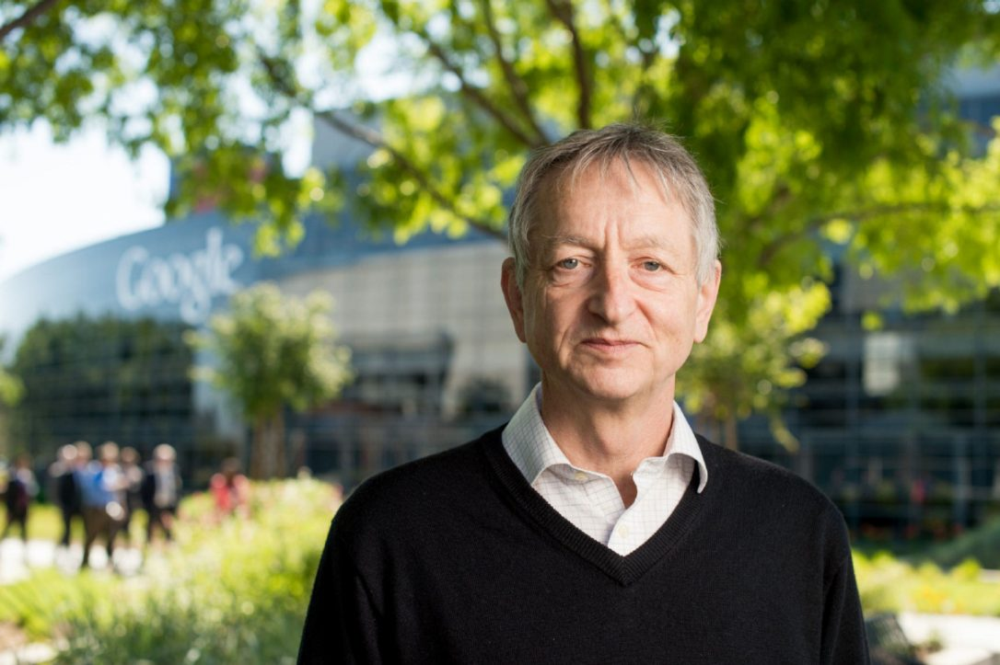

Publications and Researchers
The artificial intelligence industry is progressing at a rapid rate, with new technologies being introduced and new papers being published every day. Here are some of the recent developments in AI.
Backpropagation
The Silicon Brain
Geoffrey Hinton is one of the principal researchers in artificial intelligence. His most notable work involved utilising backpropagation to train neural networks. Neural networks learn by comparing the output it produces to the desired correct output (specified by the human supervisor), and then adapting its "neural connections" accordingly. Such an example could be in attempting to recognise images of cats - if a neural network is shown an image of a cat, and it incorrectly states (outputs) that it is not a cat, this error will be used to update the connections in the network so that it can more accurately identify images of cats.

Geoffrey Hinton at Google campus in Mountain View, California - Noah Berger for the Toronto Star
WIRED
Google's AI Wizard Unveils A New Twist On Neural Networks →
Generative Adversarial Networks (GANs)
Machine versus Machine
A neural network is a system that is built to model the structure of the human brain and the networks of neurons that make up the nervous system.
A Generative Adversarial Network (GAN) consists of two neural networks that are made to compete against each other: a generator and a discriminator[3]. The generator is given a set of randomised "noisy" input, and from it must produce a piece of data, such as an image of a dog. This data is subsequently passed into the discriminator, along with real data not created synthetically by the generator. The role of the discriminator is to determine whether or not the data it is receiving was produced by the generator. The goal of the generator is to develop data that is realistic enough to fool the discriminator, whilst the goal of the discriminator is to be smart enough to recognise the difference between the real and generated pieces of data. This back-and-forth feedback loop between the two networks is an effective method of training both networks.
The concept of GANs was conceived by researcher Ian Goodfellow and a number of partners. Their paper, published in 2014, can be found on arXiv.org[4]
 Amazon AI Jobs
Amazon AI Jobs